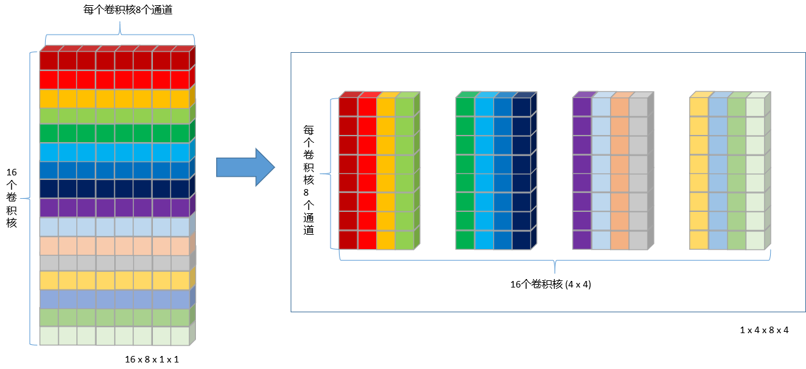
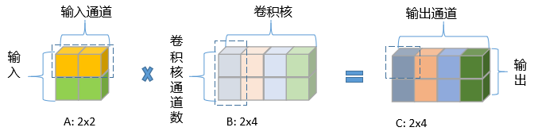
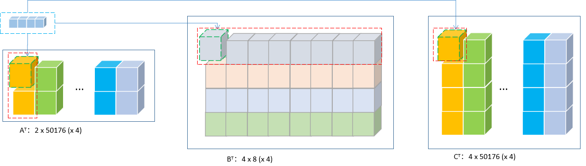
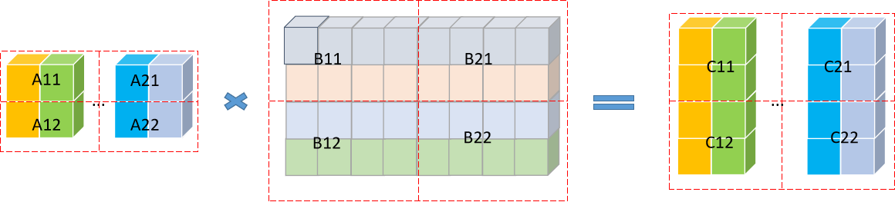
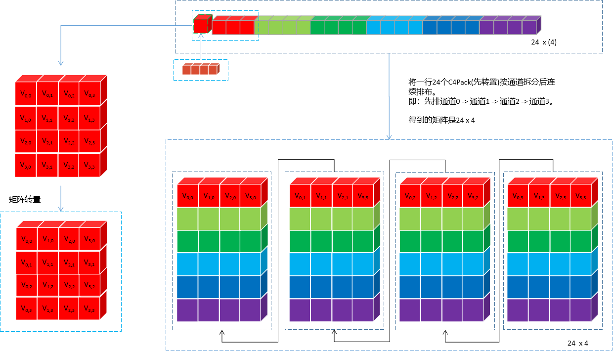
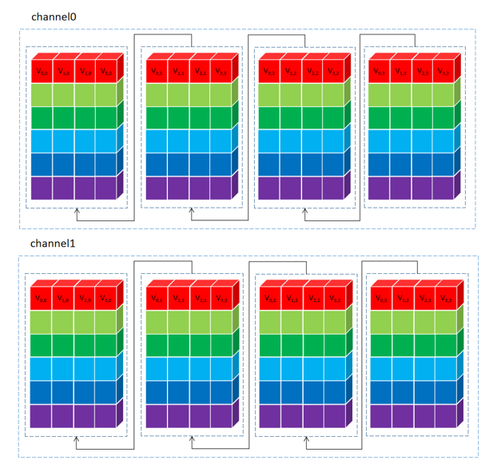
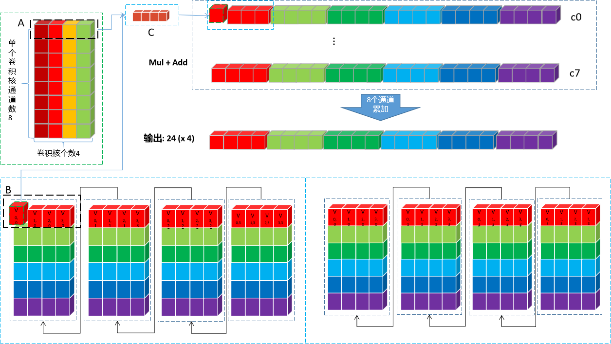

AI算法基础 [7]：MNN中的Strassen实现
前言
主要针对CPU后端，基于
以输入大小：
1 x 8 x 224 x 224（C4 Pack为1 x 2 x 224 x 224 (x 4)），权重大小:16 x 8 x 1 x 1(MNN中将其变换为1 x 4 x 8 (x 4)，即对输出通道（卷积核个数）进行C4 Pack), 输出1 x 16 x 224 x 224（C4 Pack为1 x 4 x 224 x 224 (x 4)）为例进行辅助说明。没有特殊说明，代码版本均为MNN release_1.2.3版本
适用条件
bool fastWay = common->kernelY() == 1 && common->kernelX() == 1 |
可见只针对kernelX = kernelY = strideX = strideY = 1的卷积操作。
权重重排
初始权重为NCHW排布：16 x 8 x 1 x1，按NC/4HW4重排后为 1x 4 x 8 (x 4)。即针对卷积核个数进行C4 Pack，示意图如下：

执行代码段如下：
core->MNNPackForMatMul_B(mResource->mWeight->host<float>(), originWeight, outputCount, mSrcCount, true); |
onResize
Strassen的所有步骤实现不在onExecute里，onExecute中只通过mFunctions中的函数指针调用onResize中的实现（将计算步骤拆解成若干个lambda函数，放到mFunctions中）。
MNN多线程加速在这里有不同的选择，当featureMap尺寸很大时，根据featureMap进行划分，每个线程处理一块，否则根据输出通道划分，每个线程处理一个（C4）通道：
if (matrixSizeE > CONVOLUTION_TILED_NUMBER * 8 * numberThread && matrixSizeE > ocC4) { |
暂时按照单线程进行说明。创建StrassenMatMulComputer类对象，通过onEncode接口进入StrassenMatMulComputer实现类：
unit.mStracssenComputor.reset(new StrassenMatrixComputor(backend(), false, maxDepth)); |
注意这里StrassenMatMulComputer类构造函数的第二个参数为false，即mSupportMultiThread=false，表示再往下的操作不会再进行线程划分，因为上面已经做过了。
onEncode会调用_generateMatMul，其中包含Strassen分块的主要实现。
_generateMatMul
Strassen算法本身包含矩阵分块的递归计算，因此_generateMatMul是个递归函数。
那么先看递归的终止条件，即何时结束分块操作，进行普通的卷积运算。终止条件有两个：
-
- 嵌套深度超过设定的最大深度时，或者和矩阵不能再继续分块时：
if (currentDepth >= mMaxDepth || eSub == 0 || hSub == 0 || l % (2 * core->pack) != 0 || l % (2 * lP) || l % (2 * packHUnit) != 0) { |
-
- 读写内存的次数大于普通卷积实现时：
if (saveCost <= 0.0f) { |
递归部分代码的运算顺序和内存buffer使用情况与上一篇介绍的改进版本Strassen算法是一致的，通过将分块操作分解成若干个lambda函数，压入mFunctions向量，在onExecute时执行。
// Strassen Construct |
下面着重看下1 x 1卷积的矩阵乘法和分块逻辑：
普通的1 × 1卷积的矩阵乘法（）：

蓝色虚线框代表一次卷积乘加运算
MNNC4 Pack的1 × 1卷积的矩阵乘法：

-
上图中每个方块代表一个
C4 Pack，输入按输入通道pack，卷积核按卷积核个数pack，输入按输出通道pack; -
输入
2 x 224 x 224 (x 4)可以看作普通矩阵乘法中的转置（2 x 50176 (x 4)），卷积核4 x 8 x可以看作普通矩阵乘法中的转置，输出4 x 224 x 224 (x 4)可以看作普通矩阵乘法中的转置（4 x 50176 (x 4)）。 -
如果当前矩阵不再进行分块，则一次卷积乘加运算对应为红色虚线框中的元素，直观可以理解为，实际的MNN执行中，会先对矩阵进行重排（
MNNPackC4ForMatMul_A），具体下文再谈。
Strassen矩阵分块：

在转置形式下进行分块运算，各子块的矩阵乘法递归调用_generateMatMul直到满足递归终止条件后，切换到普通矩阵乘法。
_generateBasicMatMul
_generateBasicMatMul函数中会调用_generateTrivalMatMul执行普通1 x 1卷积操作，核心代码如下：
mFunctions.emplace_back( |
其中unitNumber为当前线程需要处理多少个unit，假设eP = 24，代表每个unit处理24个C4 Pack，假设numberThread=4，则unitNumber = (224 x 224) / 4 / eP = 522。即一个线程循环中对522个unit进行处理，不能整除的部分单独处理即可。
但是由于之前提到的
mSupportMultiThread=false，numberThread实际上是恒为1。并不会在这一层级进行多线程划分。
对于单个unit的乘加操作，主要在于MNNPackC4ForMatMul_A和MNNPackedMatMul两个函数调用，如果看过这篇文章的话，其实这里跟Winograd的单个tile的乘加操作其实是复用相同的函数。可以跳转去看，这里不再贴上代码。
MNNPackC4ForMatMul_A函数重排矩阵

将单个C4通道的24个C4 Pack数据执行通道分离，属于同一个输入通道的24个值排在一起。两个C4通道（8个输入通道）处理完的示意图如下（24 x 8）：

MNNPackedMatMul 矩阵乘加
为了解释起来更简单，从上面权重图中拿1个8 x C4 Pack（即：4个卷积核）来，至于所有的4个8 x C4 Pack（即：16个卷积核）卷积核循环4次处理即可。取出来的Mul+Add运算图如下：

上图中的计算流程归纳一下：
-
MUL操作时，以上图中两个黑色框为计算单元。输入的黑色框中每次取一个值出来，与权重第一行黑色框中4个值依次相乘，并将结果pack到一起，直到24个值全部计算完成，输出一行24 (x 4)。
-
- 输入更新到下一个通道24个值，权重也下移一行，重复8次上述运算。得到
8 x 24 (x 4)。
- 输入更新到下一个通道24个值，权重也下移一行，重复8次上述运算。得到
-
- 将8行数据对应位置累加(即：同一个卷积核的不同通道累加)，得到24个点一个
C4 Pack的卷积结果：24 (x 4)。
- 将8行数据对应位置累加(即：同一个卷积核的不同通道累加)，得到24个点一个
-
- 卷积核有16个，即：4个
8 x C4 Pack，循环4次，将所有卷积核处理完，得到24个点所有卷积核的卷积结果：24 (x 4)
- 卷积核有16个，即：4个
至此，就完成了一组unit的卷积操作，得到输出4 x 24 (x 4)。处理完所有的unit之后，就完成1 x 1的卷积操作。
post后处理
普通卷积的后处理
void _AVX_MNNPackedMatMulFMA(float* C, const float* A, const float* B, const size_t* parameter, |
在MNNPackedMatMul后，调用GemmPostTreat进行后处理。
递归过程中的后处理
if (!postParameters.empty() && COT.stackIndex >= 0) { |
由于递归过程构建中子矩阵的乘法调用_generateMatMul时传入的COT和postParameters均为空，如下：
auto code = _generateMatMul(eSub, lSub, hSub, X, Y, c21, Empty, currentDepth, {}); |
故实际上，除了递归顶层外，其他递归层次（包括普通卷积层）均不会执行后处理操作。当然，如果普通卷积就是顶层（即没有递归过程），那后处理由普通卷积负责完成。
onExecute
通过mFunctions队列依次执行onResize中构建的Strassen递归操作。
void StrassenMatrixComputor::onExecute(const uint8_t* AT, const uint8_t* BT, const uint8_t* COT, uint8_t* CT) { |
困惑
实际上，在上述尺寸条件下，MNN并不会执行Strassen递归操作，而是直接执行普通卷积。因为Strassen虽然处理的数据规模越大，乘加计算上越有优势，但是在递归过程中访存操作比普通矩阵乘法要多的多，因此为了防止因为访存而引起可能的负优化，MNN每次递归都会对比两者的访存次数，选择访存次数更少的方法计算（即上面的终止条件2）。
MNN源码中cost之差是这样算的：
float AComputeCost = 4 * ((float)eSub * lSub); |
化简一下其实为：
但是不是对于其具体含义还是很困惑，已在github上提了issue，等大佬回复。
按照上述cost计算方法，在固定的情况下，遍历，实测下来会用到Strassen的都是ic和oc大于256的情况。
void TestStrassenCost() { |
致谢
文章主体框架参考自东哥的MNN源码解读的内部分享，加上了自己的一些看法。有幸被看到的话，希望能给点个赞~~
 wechat
wechat alipay
alipay


![CUDA基础 [4]：多流测试](/images/%E6%88%98%E5%8F%8CCG_%E6%9F%90%E6%97%A5%E7%9A%84%E5%90%AF%E7%A8%8B.png)
![CUDA基础 [3]：流和事件](/images/%E6%88%98%E5%8F%8CCG_%E6%9F%90%E6%97%A5%E7%9A%84%E7%9C%9F%E7%9B%B8.png)
![CUDA基础 [2]：Get Started](/images/%E6%88%98%E5%8F%8CCG_%E6%9F%90%E6%9C%88%E6%9F%90%E6%97%A5%E6%99%B4.png)
![CUDA基础 [1]：CPU GPU TPU NPU](/images/%E6%88%98%E5%8F%8CCG_%E7%BA%AF%E7%99%BD%E7%9A%84%E7%A4%BC%E6%9C%8D.png)